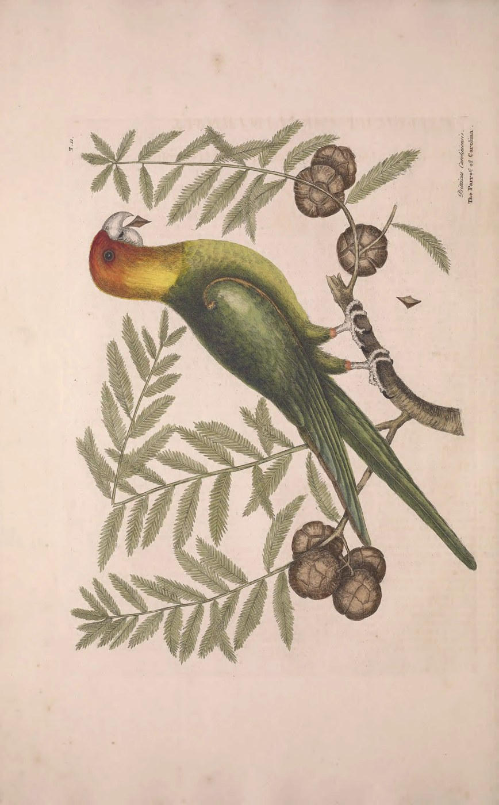

The Parrot of Carolina (The Natural History of Carolina, Florida and the Bahama Islands, T. 11)
Mark Catesby · 1729–32 · Coloured etching · Smithsonian Libraries and Archives
Free to use
Catesby's text beside this plate records that the bird weighed three and a half ounces, fed on the seeds of cypress and the kernels of apples, and came in flocks to the orchards in autumn. Virginia, he wrote, was the furthest north he had heard of it being seen. He went to Carolina in 1722 on a collecting expedition for members of the Royal Society and was based in Charleston.